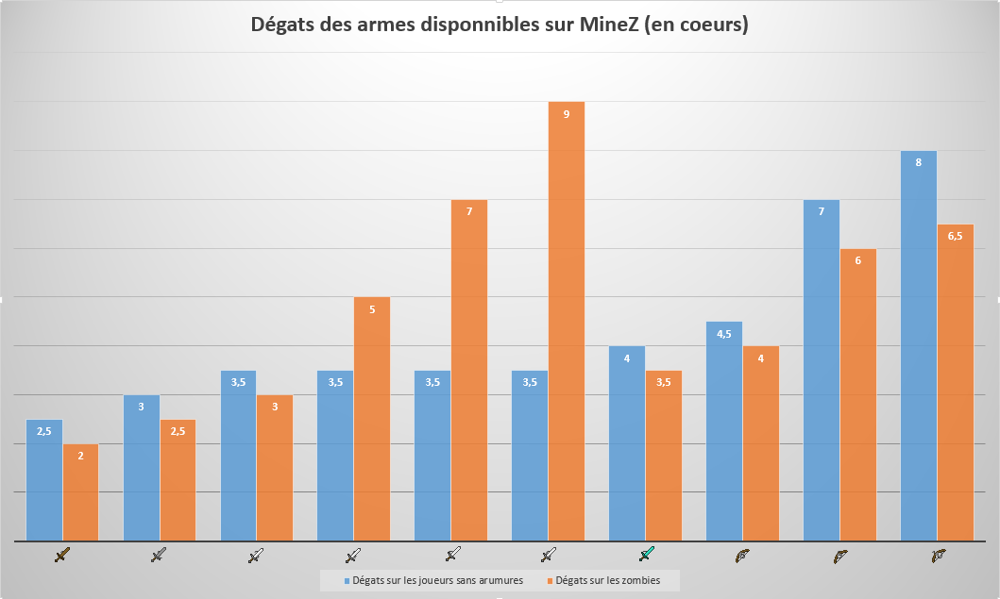
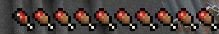

LES PREMICES D'UN COMBAT
Après avoir collecté les ressources de bases et un équipement déçent il ne vous manque que quelques connaissances pratiques avant de vous aventurer dans cette univers impitoyable. Nous allons donc vous expliquez certaines astuces pouvant vous sauver la vie en combat ou alors vous éviter de gaspiller inutilement de la nourriture si précieuse dans ce jeu.
| Dégats des armes disponibles sur MineZ | ||||||||||
|---|---|---|---|---|---|---|---|---|---|---|
| Type d'armes | Wooden Sword | Stone Sword | Iron Sword | Iron Sword + Smite I | Iron Sword + Smite II | Iron Sword + Smite III | Diamond Sword | Bow | Bow + Power I | Bow + Power II |
| Dégats sur les joueurs sans armures | 2.5 coeurs | 3 coeurs | 3.5 coeurs | 3.5 coeurs | 3.5 coeurs | 3.5 coeurs | 4 coeurs | 4.5 coeurs | 7 coeurs | 8 coeurs |
| Dégats sur les zombies | 2 coeurs | 2.5 coeurs | 3 coeurs | 5 coeurs | 7 coeurs | 9 coeurs | 3.5 coeurs | 4 coeurs | 6 coeurs | 6.5 coeurs |

| Nourritures sur Minez |  | ||||||||
|---|---|---|---|---|---|---|---|---|---|
| Types de nourritures | Pomme | Pastèque | Cookie | Pain | Soupe de champignons | Pomme de terre cuite | Steak | Gâteau | |
| Regain de nourriture | 2 gigots | 1 gigot | 1 gigot | 2.5 gigots | 3 gigots | 3 gigots | 4 gigots | 0.5 gigot par part (contient 6 parts) | |
| Saturation | 1 gigots | 0 gigot | 0 gigot | 2 gigots | 2 gigots | 3 gigots | 3 gigots | 0 gigot | |
| Nombre d'éléments disponibles par slot | 2/slot | 4/slot | 8/slot | 3/slot | 1/slot | 3/slot | 1/slot | 1/slot | |